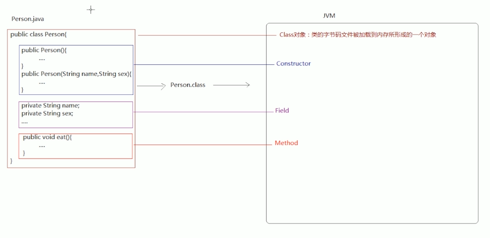

Java反射原文出处:本文由博客园博主星海|universe提供。
原文连接:https://www.cnblogs.com/huowuyan/p/11628399.html
反射概述
反射的概述
什么是Java的反射机制
JAVA反射机制是在运行状态中，对于任意一个类，都能够知道这个类的所有属性和方法；对于任意一个对象，都能够调用它的任意方法和属性；这种动态获取信息以及动态调用对象方法的功能称为java语言的反射机制。
Java的反射机制的作用
是用来编写一些通用性较高的代码或者框架的时候使用。
反射常用对象的概述
- Class
- Class类的实例表示正在运行的Java应用程序中的类和接口
- Constructor
- Field
- Field提供有关类或接口的单个字段的信息，以及对它的动态访问权限。
- Method
- Method提供关于类或接口上单独某个方法的信息。

反射常用API
Class类的概述和使用
- Java中java.lang.Class类用于表示一个类的字节码(.class)文件
- 如何得到某个class文件对应的Class对象
- 已知类和对象的情况下
类名.class
对象.getClass() ---- Object类提供
- 未知类和对象的情况下
Class.forName("包名.类名")
Class类代表某个类的字节码，并提供了加载字节码的方法：
forName("包名.类名")，forName方法用于加载类字节码到内存中，并封装成一个Class对象。
Constructor类的概述和使用
- Constructor类的实例对象代表类的一个构造方法
- 得到某个类所有的构造方法
Constructor[] constructors = Class.forName("java.lang.String").getConstructors();
- 得到指定的构造方法并调用
Constructor constructor = Class.forName("java.lang.String").getConstructor(String.class);
String str = (String)constructor.newInstance("abc");
- Class类的newInstance()方法用来调用类的默认构造方法
String obj = (String)Class.forName("java.lang.String").newInstance();
Field类的概述和使用
Method类的概述和使用
- Method类代表某个类中的一个成员方法
- Method对象的获得
- 获得所有方法
getDeclaredMethods()
getMethods()
- 获得指定的方法
getDeclaredMethod(String name, Class<?>... parameterTypes)
getMethod(String name, Class<?>... parameterTypes)
- 设置Method方法是否可以访问
method.setAccessible(boolean);
- 通过反射执行方法
invoke(Object obj, Object... args)